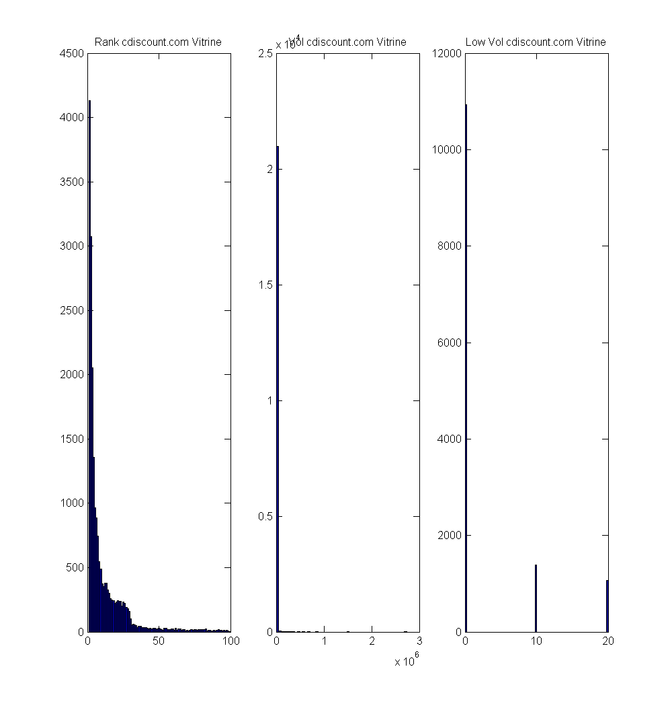
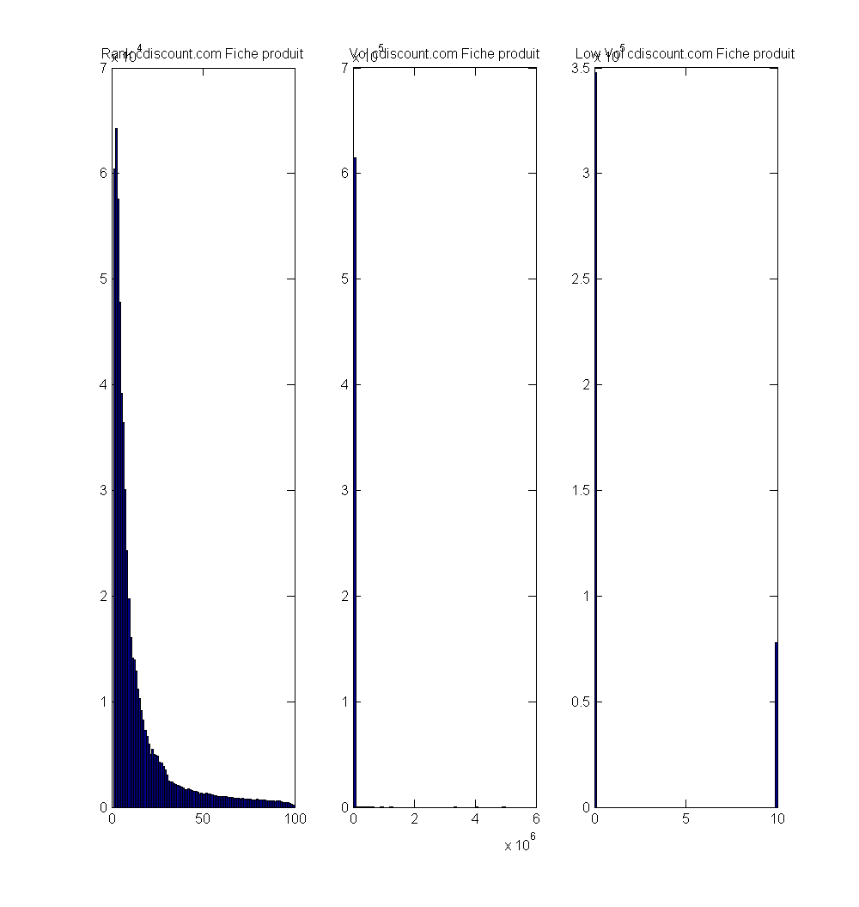
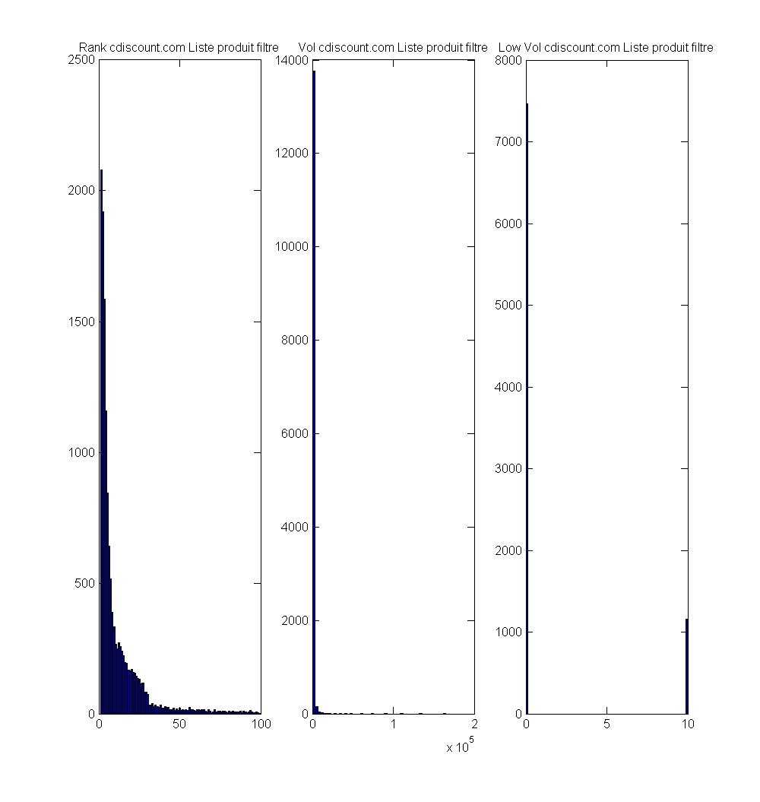
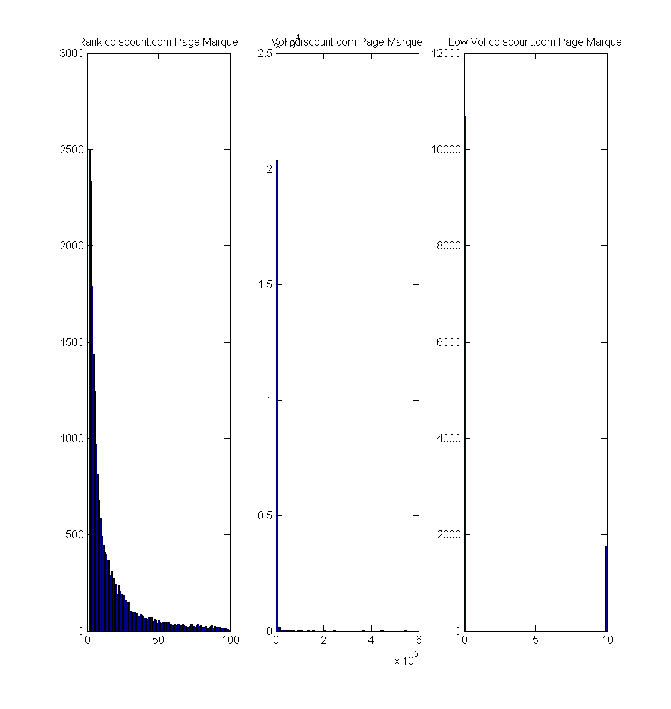
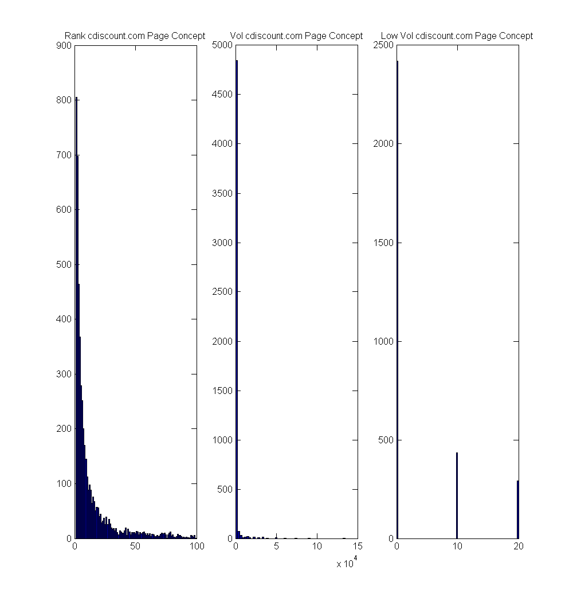
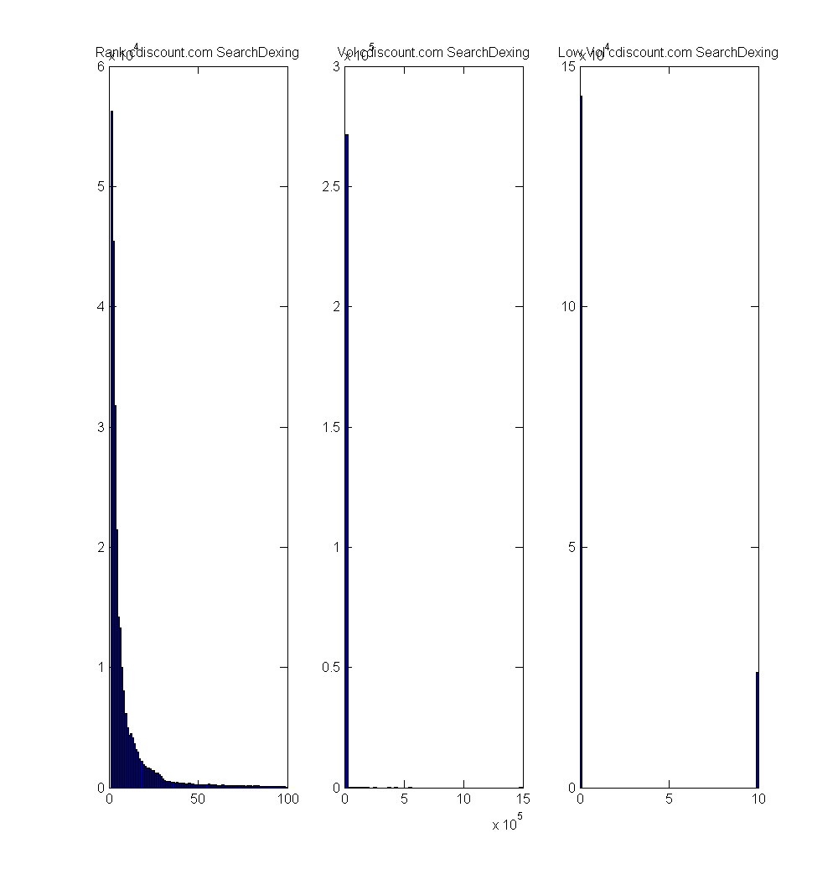

Reporting for the keywords referential
Contents
- Getting data from the database referential & storing it efficiently in memory
- Setting up magasins and concurrents
- Cdiscount Vitrine pages analysis
- Cdiscount fiche produit pages analysis
- Cdiscount liste produit filtre pages analysis
- Cdiscount page marque pages analysis
- Cdiscount page concept pages analysis
- Cdiscount SearchDexing pages analysis
- Closing the connection
Getting data from the database referential & storing it efficiently in memory
javaaddpath('C:\My_MathWorks_Work\PRODUCTS\postgresql-9.3-1102.jdbc4.jar'); setdbprefs ('DataReturnFormat', 'table'); conn = database('KEYWORDSDB','postgres','root','Vendor','PostgreSQL',... 'Server','localhost');
Setting up magasins and concurrents
my_magasin = {'informatique';'musique-cd-dvd';'musique-instruments';'dvd';'livres-bd';'jeux-pc-video-console';'juniors';'high-tech';'vin-champagne';'photo-numerique';'bagages';'electromenager';'le-sport';'telephonie';'arts-loisirs';'pret-a-porter';'chaussures';'destockage';'auto';'Unknown';'maison';'boutique-cadeaux';'bijouterie';'au-quotidien';'jardin';'personnalisation-3d';'animalerie'};
my_entity = {'cdiscount.com';'amazon.fr';'rueducommerce.fr';'conforama.fr';'darty.com';'priceminister.com';'zalando.fr';'ldlc.com';'boulanger.fr';'french.alibaba.com';'pixmania.fr'};
% %% Metrics & numbers
% %% total number of keywords
% requesting_string=['select count(distinct keyword) from pricing_keywords'];
% setdbprefs ('DataReturnFormat', 'numeric');
% curs = exec(conn, requesting_string);
% curs = fetch(curs);
% close(curs);
% %Assign data to output variable
% total_count = curs.Data;
% disp(['Number of distinct keywords : ' num2str(total_count)])
% % number of distinct keywords per magasin
% for mag=1:length(my_magasin)
% %% Keyword per magasin
% current_mag=my_magasin{mag};
% requesting_string=['select count(distinct keyword) from pricing_keywords where magasin=''' current_mag ''''];
% setdbprefs ('DataReturnFormat', 'numeric');
% curs = exec(conn, requesting_string);
% curs = fetch(curs);
% close(curs);
% %Assign data to output variable
% mag_count = curs.Data;
% % select count(distinct keyword) from pricing_keywords where magasin='informatique'
% disp(['Number of distinct keywords : ' num2str(mag_count) ' for magasin : ' current_mag])
% disp(['Percentage of keywords : ' num2str(mag_count./total_count*100) ' for magasin : ' current_mag])
% end
%
% for conc=1:length(my_entity)
% %% coverage rate per entity
% current_ent = my_entity{conc};
% requesting_string=['select count(*) from (select keyword, count(url) as nb_url from pricing_keywords where domain= ''' current_ent ''' group by keyword ) as temp'];
% setdbprefs ('DataReturnFormat', 'numeric');
% curs = exec(conn, requesting_string);
% curs = fetch(curs);
% close(curs);
% %Assign data to output variable
% global_count = curs.Data;
% disp(['Number of distinct keywords where' current_ent ' is ranking : ' num2str(global_count)])
% disp(['Coverage rate where ' current_ent ' is ranking : ' num2str(global_count/total_count*100)]);
%
% %% average number of urls per keyword per entity
% requesting_string=['select avg(nb_url) from (select keyword, count(url) as nb_url from pricing_keywords where domain= ''' current_ent ''' group by keyword ) as temp'];
% setdbprefs ('DataReturnFormat', 'numeric');
% curs = exec(conn, requesting_string);
% curs = fetch(curs);
% close(curs);
% %Assign data to output variable
% global_count = curs.Data;
% disp(['Average number of urls per ranking keyword ' num2str(global_count)]);
%
% %% average position per entity
% requesting_string=['select avg(search_position) from pricing_keywords where domain= ''' current_ent ''''];
% setdbprefs ('DataReturnFormat', 'numeric');
% curs = exec(conn, requesting_string);
% curs = fetch(curs);
% close(curs);
% %Assign data to output variable
% global_count = curs.Data;
% disp(['Average search position for ' current_ent ' : ' num2str(global_count)]);
%
% %% average volume per entity
% requesting_string=['select avg(search_volume) from pricing_keywords where domain= ''' current_ent ''''];
% setdbprefs ('DataReturnFormat', 'numeric');
% curs = exec(conn, requesting_string);
% curs = fetch(curs);
% close(curs);
% %Assign data to output variable
% global_count = curs.Data;
% disp(['Average search volume for ' current_ent ' : ' num2str(global_count)]);
%
% for mag=1:length(my_magasin)
% current_mag=my_magasin{mag};
% requesting_string=['select count(*) from (select keyword, count(url) as nb_url from pricing_keywords where magasin=''' current_mag ''' and domain= ''' current_ent ''' group by keyword ) as temp'];
% setdbprefs ('DataReturnFormat', 'numeric');
% curs = exec(conn, requesting_string);
% curs = fetch(curs);
% close(curs);
% %Assign data to output variable
% global_count = curs.Data;
% disp(['Number of keywords : ' num2str(global_count) ' where ' current_ent ' ranks for magasin : ' current_mag]);
% disp(['Coverage rate for magasin ' current_mag ' where ' current_ent ' is ranking : ' num2str(global_count/total_count*100)])
%
% % average position for an entity
% requesting_string=['select avg(search_position) from pricing_keywords where domain= ''' current_ent ''' and magasin=''' current_mag ''''];
% setdbprefs ('DataReturnFormat', 'numeric');
% curs = exec(conn, requesting_string);
% curs = fetch(curs);
% close(curs);
% %Assign data to output variable
% global_count = curs.Data;
% disp(['Average search position for ' current_ent ' in magasin ' current_mag ' : ' num2str(global_count)]);
%
% % average volume for an entity and a magasin
% requesting_string=['select avg(search_volume) from pricing_keywords where domain= ''' current_ent ''' and magasin=''' current_mag ''''];
% setdbprefs ('DataReturnFormat', 'numeric');
% curs = exec(conn, requesting_string);
% curs = fetch(curs);
% close(curs);
% %Assign data to output variable
% global_count = curs.Data;
% disp(['Average search volume for ' current_ent ' in magasin ' current_mag ' : ' num2str(global_count)]);
% end
% end
Cdiscount Vitrine pages analysis
type='Vitrine'; regexx='/v-'; current_conc = 'cdiscount.com'; pagetype_reporting(conn,type,regexx,current_conc);
Cdiscount fiche produit pages analysis
type='Fiche produit'; regexx='/f-'; pagetype_reporting(conn,type,regexx,current_conc);
Cdiscount liste produit filtre pages analysis
type='Liste produit filtre'; regexx='/lf-'; pagetype_reporting(conn,type,regexx,current_conc);
Cdiscount page marque pages analysis
type='Page Marque'; regexx='/m-'; pagetype_reporting(conn,type,regexx,current_conc);
Cdiscount page concept pages analysis
type='Page Concept'; regexx='/ct-'; pagetype_reporting(conn,type,regexx,current_conc);
Cdiscount SearchDexing pages analysis
type='SearchDexing'; regexx='/r-'; pagetype_reporting(conn,type,regexx,current_conc); % %% magasin reporting % current_magasin='informatique'; % magasin_reporting(current_magasin,my_entity,conn); % % %% magasin reporting % current_magasin='musique-cd-dvd'; % magasin_reporting(current_magasin,my_entity,conn); % % %% magasin reporting % current_magasin='musique-instruments'; % magasin_reporting(current_magasin,my_entity,conn); % % %% magasin reporting % current_magasin='dvd'; % magasin_reporting(current_magasin,my_entity,conn); % % %% magasin reporting % current_magasin='livres-bd'; % magasin_reporting(current_magasin,my_entity,conn); % % %% magasin reporting % current_magasin='jeux-pc-video-console'; % magasin_reporting(current_magasin,my_entity,conn); % % %% magasin reporting % current_magasin='juniors'; % magasin_reporting(current_magasin,my_entity,conn); % % %% magasin reporting % current_magasin='high-tech'; % magasin_reporting(current_magasin,my_entity,conn); % % %% magasin reporting % current_magasin='vin-champagne'; % magasin_reporting(current_magasin,my_entity,conn); % % %% magasin reporting % current_magasin='photo-numerique'; % magasin_reporting(current_magasin,my_entity,conn); % % %% magasin reporting % current_magasin='bagages'; % magasin_reporting(current_magasin,my_entity,conn); % % %% magasin reporting % current_magasin='electromenager'; % magasin_reporting(current_magasin,my_entity,conn); % % %% magasin reporting % current_magasin='le-sport'; % magasin_reporting(current_magasin,my_entity,conn); % % %% magasin reporting % current_magasin='telephonie'; % magasin_reporting(current_magasin,my_entity,conn); % % %% magasin reporting % current_magasin='arts-loisirs'; % magasin_reporting(current_magasin,my_entity,conn); % % %% magasin reporting % current_magasin='ct-ordinateurs-portables'; % magasin_reporting(current_magasin,my_entity,conn); % % %% magasin reporting % current_magasin='pret-a-porter'; % magasin_reporting(current_magasin,my_entity,conn); % % %% magasin reporting % current_magasin='chaussures'; % magasin_reporting(current_magasin,my_entity,conn); % % %% magasin reporting % current_magasin='destockage'; % magasin_reporting(current_magasin,my_entity,conn); % % %% magasin reporting % current_magasin='auto'; % magasin_reporting(current_magasin,my_entity,conn); % % %% magasin reporting % current_magasin='maison'; % magasin_reporting(current_magasin,my_entity,conn); % % %% magasin reporting % current_magasin='boutique-cadeaux'; % magasin_reporting(current_magasin,my_entity,conn); % % %% magasin reporting % current_magasin='bijouterie'; % magasin_reporting(current_magasin,my_entity,conn); % % %% magasin reporting % current_magasin='au-quotidien'; % magasin_reporting(current_magasin,my_entity,conn); % % %% magasin reporting % current_magasin='jardin'; % magasin_reporting(current_magasin,my_entity,conn); % % %% magasin reporting % current_magasin='personnalisation-3d'; % magasin_reporting(current_magasin,my_entity,conn); % % %% magasin reporting % current_magasin='animalerie'; % magasin_reporting(current_magasin,my_entity,conn); % % %% magasin reporting % current_magasin='ct-electromenager-couleur'; % magasin_reporting(current_magasin,my_entity,conn); % % %% magasin reporting % current_magasin='Unknown'; % magasin_reporting(current_magasin,my_entity,conn);
Closing the connection
close(conn);